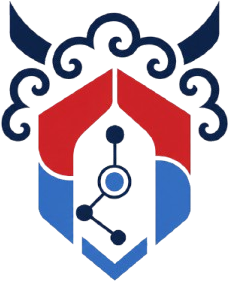
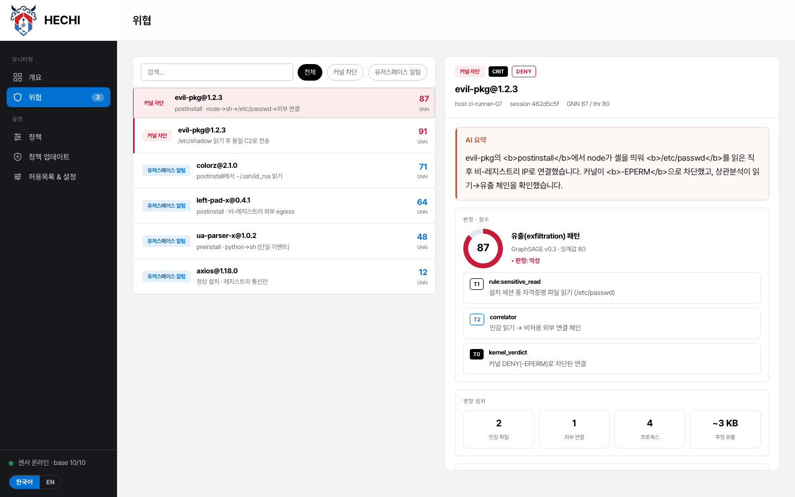
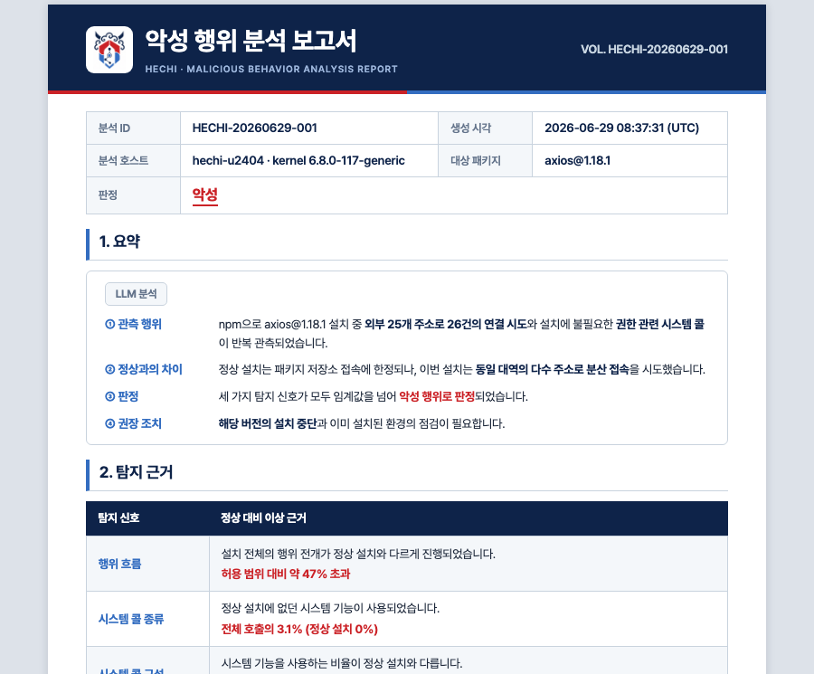

정상처럼 보이는 위협, 설치 전 검사로는 걸러지지 않습니다.
해치(Hechi)는 옳고 그름을 가리는 상상의 동물 해태(獬豸)에서 온 이름입니다.
정상 행위에 섞여들고, 흔적까지 지웁니다.
라이브러리·패키지 매니저를 타고 설치·실행(예: postinstall) 흐름에 섞여 들지만, 개별 동작은 정상이라 여러 행위를 잇는 맥락 없이는 가려내기 어렵습니다.
예측할 수도, 미리 막을 수도 없었습니다.
기존 상용 도구로는 실행 시점의 이런 행위를 상시로 관측하기 어려워, 예측도 예방도 어려웠습니다.
그래서 Hechi입니다. 이름·평판이 아니라 실행 시점의 실제 행위로 판단합니다.
이름·평판이나 코드를 설치 전에 훑는 것만으로는, 정상으로 보이는 패키지가 그대로 통과됩니다.
설치·실행 시점의 실제 행위를 런타임에서 관측·분석해야, 이름만으로는 알 수 없던 악성 행위를 잡아냅니다.
npm 설치·실행 시점의 공급망 위협을 탐지·차단·분석하는 런타임 보안 솔루션입니다.
npm 설치·실행 중의 파일·네트워크·프로세스 행위를 커널 레벨에서 수집하고, 이를 바탕으로 예방·탐지·대응합니다.
예방 — 알려진 패턴 차단
기존 공급망 위협의 공격 패턴을 반영한 룰셋 기반 커널 차단.
탐지 — 새로운 공격 탐지·알림
기존 위협을 우회하는 새로운 공격을 유저스페이스 룰셋 기반으로 탐지·알림.
대응 — 신속 탐지 기반 초동대응
AI 분석 엔진으로 초동대응 용이성을 강화.
탐지 현황부터 대응까지, 하나의 흐름으로.
대시보드에서 현황을, 상세·룰셋에서 원인을, 보고서에서 대응까지 이어집니다.

위협 현황을 한눈에.
탐지 현황과 처리 상태, 센서 상태를 하나의 대시보드에 모아 전체 그림을 먼저 봅니다.
- 심각도·상태·발생 시점 요약
- 커널 차단과 유저스페이스 알림 구분

무엇이 왜 위험한지.
각 탐지의 AI 요약과 판정 점수, 적용된 룰셋, 영향 범위를 한 화면에서 확인합니다.
- 탐지를 유발한 실제 관찰 행위와 룰셋
- 민감 파일·외부 연결 등 영향 범위 요약

보고서로 대응까지.
무엇이 언제 왜 발생했는지 요약·타임라인·판단 근거로 정리해, 초동대응과 사후 보고에 바로 씁니다.
- 요약·타임라인·판단 근거 자동 구성
- 그대로 공유·보고에 활용
패키지가 설치되고 실행되는 환경에 Hechi를 적용합니다.
EC2, Jenkins, GitHub Actions, GitLab Runner, Docker, Kubernetes 등 빌드·배포 파이프라인이 이미 동작하는 환경을 목표로, 별도의 분석 인프라 없이 지원을 넓혀가고 있습니다.
 AWS EC2
AWS EC2 GitHub Actions
GitHub Actions GitLab
GitLab Docker
Docker Kubernetes
Kubernetes지원 환경을 계속 넓혀가고 있습니다
알려진 악성 행위가 실행 전에 차단되는 과정을, 라이브 데모로 확인하세요.
도입은 세 단계면 충분합니다.
에이전트 설치
빌드 서버·러너에 에이전트를 설치합니다. 새 인프라는 필요 없습니다.
정책·허용목록 구성
팀·환경에 맞게 차단 정책과 허용목록을 설정합니다. 관찰 모드로 먼저 검증할 수 있습니다.
모니터링과 대응
대시보드에서 위협을 확인하고 보고서로 초동대응을 시작합니다.
설치부터 환경설정까지 한 번에 끝내는 설치 스크립트는 도입 시 함께 제공됩니다. 자세한 도입 절차는 문의해 주세요.
공급망 위협 대응을 런타임에 적용해 보세요.
Hechi는 설치·실행 시점의 행위로 공급망 공격을 예방·탐지·대응합니다.